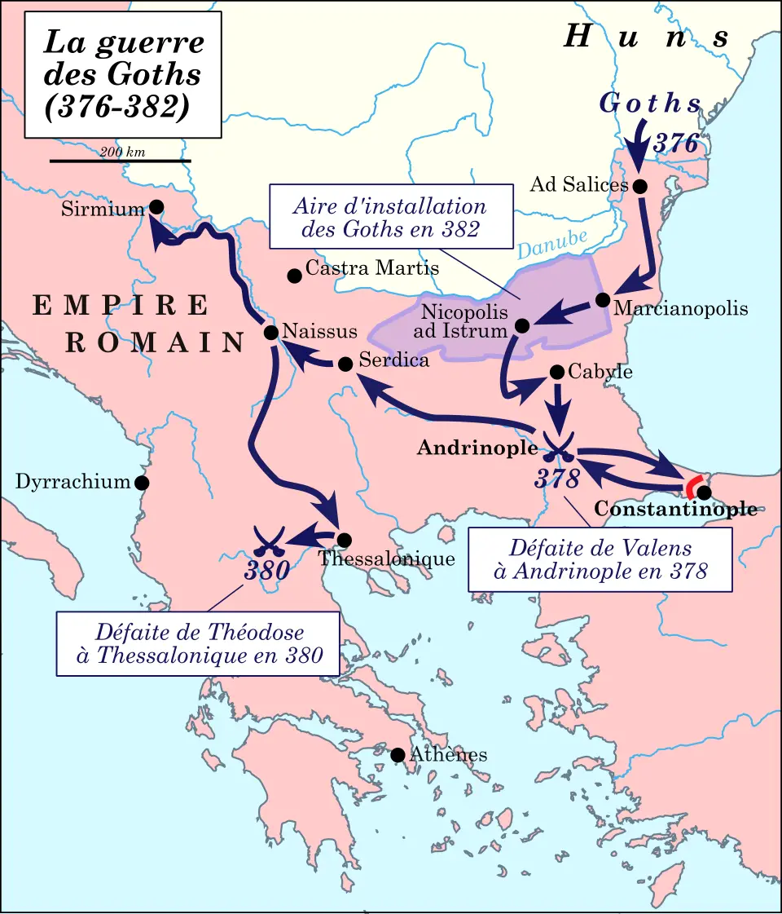
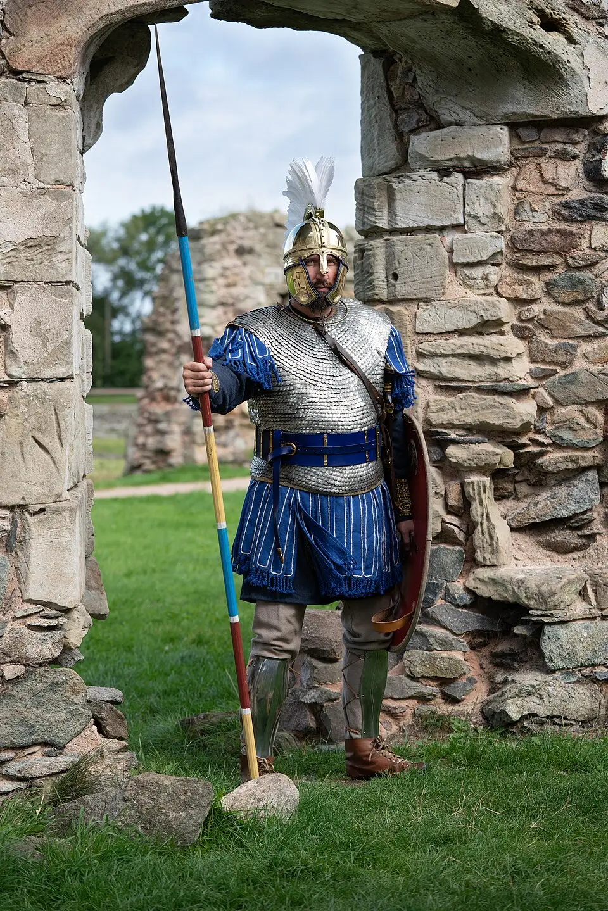
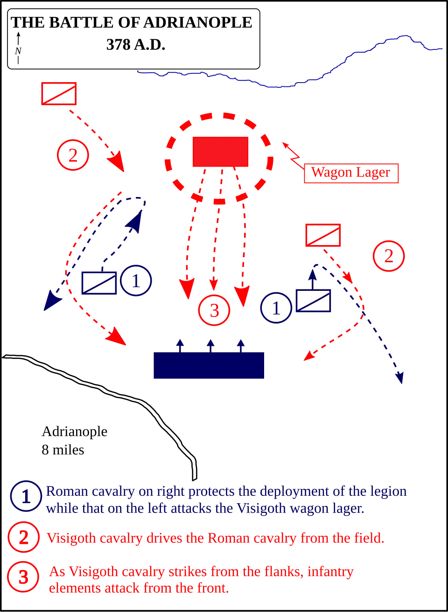
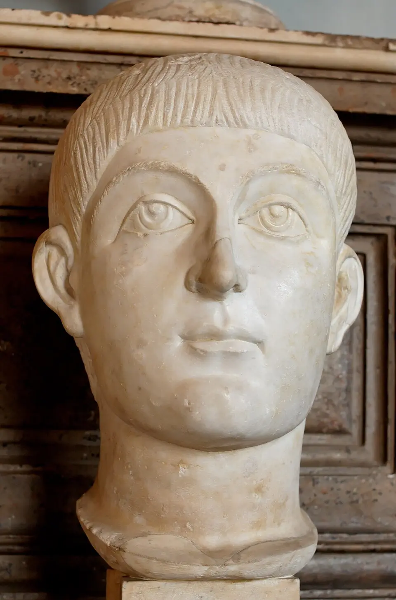

Adrianople: ngày hoàng đế La Mã biến mất trên chiến trường
Chiều 9 tháng 8 năm 378, đạo quân Đông La Mã tan vỡ trước trại xe của người Goth, và hoàng đế Valens biến mất. Thi thể ông không bao giờ được tìm thấy.

Sáng 9 tháng 8 năm 378, hoàng đế Valens rời thành Adrianople, nay là Edirne ở Thổ Nhĩ Kỳ, để kho bạc và bộ máy hành chính lại sau tường thành. Quân của ông hành quân khoảng tám dặm qua địa hình khó, đến trước trại người Goth vào khoảng trưa, mệt và khát. Trước mặt họ là một vòng xe trên đỉnh đồi, bên trong có gia đình và tài sản của người Goth. Đến tối, phần lớn đạo quân ấy đã bị giết, và vị hoàng đế không còn ở đâu nữa.
Từ người tị nạn thành đạo quân
Năm 376, người Goth do Alavivus và Fritigern dẫn đầu, bị người Hung đẩy khỏi quê hương, xin vào sống trong đế quốc. Valens đồng ý, hy vọng họ sẽ thành nông dân và lính. Nhưng quá nhiều người dồn vào một vùng nhỏ, và lương thực thiếu. Các quan chức dưới quyền tướng Lupicinus bán bớt lương thực trước khi nó đến tay người Goth. Theo các ghi chép về cuộc chiến, những gia đình Goth đói khát phải bán con làm nô lệ cho người La Mã để đổi thịt chó, giá một đứa trẻ lấy một con chó.
Đầu năm 377, người Goth nổi dậy gần Marcianople và tiêu diệt quân của Lupicinus. Nô lệ, thợ mỏ và tù nhân bỏ trốn theo họ. Hai năm sau đó là một chuỗi trận đánh không phân thắng bại khắp vùng Balkan. Đến năm 378, chính hoàng đế phải ra tay.
Quyết định không chờ


Năm 378, Valens rút quân từ biên giới Ba Tư về, đến Constantinople ngày 30 tháng 5. Người cháu, hoàng đế Tây La Mã Gratian, đang đem quân sang giúp và gửi thư qua tướng Richomeres, xin Valens chờ. Các tướng của Valens cũng khuyên như vậy. Dân Constantinople thì chê ông để mặc người Goth tàn phá, và đem ông ra so sánh bất lợi với Gratian.
Ngày 6 tháng 8, trinh sát báo có khoảng 10.000 người Goth đang tiến về Adrianople. Con số này thiếu: một phần lớn kỵ binh Goth đang đi kiếm lương thực ở xa. Ngày 8 tháng 8, Fritigern cử sứ giả đến xin hòa và xin đất. Valens từ chối, tin mình đông quân hơn. Ngày hôm sau, hai đạo quân đối mặt nhau trước vòng xe.
Theo Ammianus Marcellinus, chỉ khoảng một phần ba quân La Mã rút được, còn số chết thì không đếm xuể.
Trận đánh


Trước trại xe, người Goth đốt đồng cỏ để khói làm quân La Mã khó chịu, rồi mở cuộc thương lượng về trao đổi con tin. Fritigern cần thời gian để kỵ binh quay về. Giữa lúc thương lượng, một số đơn vị La Mã tự ý tấn công. Đội cung thủ của hoàng tử xứ Iberia là Bacurius xông lên mà không có quân hỗ trợ và bị đẩy lùi. Cánh trái La Mã chạm được vòng xe thì đã muộn: kỵ binh Goth do Alatheus và Saphrax chỉ huy vừa kéo về và đánh vào sườn.
Quân La Mã bị dồn xuống chân đồi, áo giáp nặng và khiên dài khiến họ không xoay xở được. Trận đánh thành cuộc tháo chạy, và cuộc tàn sát kéo dài đến tối. Theo Ammianus Marcellinus, chỉ khoảng một phần ba quân La Mã rút được, còn số chết thì không đếm xuể. Tướng Sebastianus và 35 tướng tá cấp tribune nằm trong số người chết. Các sử gia hiện đại ước tính quân Valens có thể khoảng 15.000 người, và quân Goth khoảng 12.000 đến 15.000. Nhưng những con số ấy, và cả cái chết của hoàng đế, gần như chỉ dựa vào lời một người.
Sử sách chép gì


Gần như mọi điều ta biết đều đến từ một người. Ammianus Marcellinus là một sĩ quan cũ gốc Hy Lạp, tự gọi mình là "người lính cũ và người Hy Lạp". Bộ sử Res gestae của ông vốn có 31 quyển, mất 13 quyển đầu; phần còn lại kết thúc đúng ở trận Adrianople. Vì vậy, vị trí chính xác của chiến trường đến nay vẫn chưa xác định, và các nhà nghiên cứu đưa ra ba địa điểm khác nhau quanh thành.
Về cái chết của Valens, Ammianus ghi lại hai lời kể. Một nói ông bị bỏ rơi giữa trận và chết lẫn trong đám lính, không ai nhận ra. Lời kể kia nói ông cùng vài cận vệ và hoạn quan trốn vào một căn nhà nông dân. Quân Goth đến cướp, không biết ai ở bên trong; cận vệ bắn tên từ tầng trên, và người Goth đốt nhà. Một cận vệ nhảy qua cửa sổ thoát ra và nói cho họ biết, nhưng đã quá muộn. Không có lời kể nào được chứng thực.
Chi tiết bên lề: chân dung một hoàng đế
Ở gần cuối bộ sử, Ammianus tả Valens người chắc nịch, da ngăm, cao trung bình, chân vòng kiềng, hơi bụng phệ, và một mắt có đồng tử mờ. Đó là một trong số ít chân dung bằng chữ của một hoàng đế La Mã được viết bởi người cùng thời, và nó không tâng bốc.
Một tranh luận khác thuộc về giới quân sử. Năm 1885, Charles Oman viết rằng Adrianople mở đầu thời đại kỵ binh nặng thắng bộ binh, dẫn tới hiệp sĩ thời Trung cổ. Năm 1973, T. S. Burns phản bác: kỵ binh Goth khá ít, Valens có lẽ còn nhiều kỵ binh hơn, và đây chủ yếu là trận bộ binh đánh bộ binh. Giới nghiên cứu ngày nay cũng cho rằng cả hai bên chưa dùng bàn đạp ngựa.
Dư âm đến hôm nay
Cuộc chiến kết thúc bằng hòa ước ngày 3 tháng 10 năm 382 dưới thời Theodosius I. Lần đầu tiên, người Goth được cấp đất ngay trong lãnh thổ đế quốc mà vẫn giữ tổ chức riêng của mình. Valens theo phái Arius; cái chết của ông mở đường để Theodosius đưa Kitô giáo Nicaea thành hình thức chính thức của đế quốc. Trận này thường được coi là khởi đầu của chuỗi sự kiện dẫn tới sự sụp đổ của Tây La Mã ở thế kỷ 5, dù tầm quan trọng của nó vẫn được tranh luận.
Trận đánh và cái chết của Valens là có thật. Còn ông chết ra sao, và một buổi chiều có thực sự thay đổi lịch sử châu Âu hay không, thì còn tùy người kể.